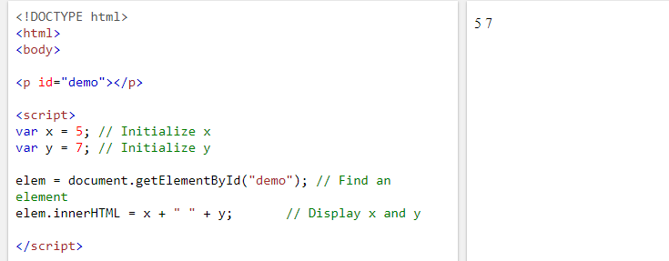
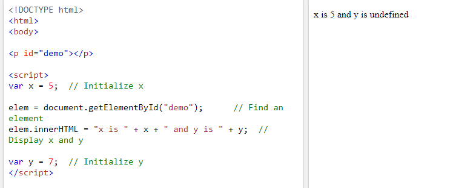

Hoisting
In JavaScript a variable can be declared after it has been used. This concept is known as hoisting which is JavaScripts default behavior of moving all declarations to the top of the current scope (in other words to the top of the current script or the current function).
Here is a basic example of hoisting with the output being on the right.

Another thing to note about Hoisting is that it does not work with variables declared with the key words let or const are not hoisted. However JavaScript only hoists declarations and not initializations. The next two examples show this difference.
 As you can see hoisting does not work in the third picture because of the positions of the initialization of the variables. Because the declaration (vary y) and not the initialization (=7) gets put up on top. Since y is initialized and cannot be hoisted, it is undefined. Hoisting is often overlooked behavior in JavaScript by developers. To avoid the bugs that come from hoisting one should always declare variables at the beginning of every scope.
Hoisting video tutorial
In case the video doesn't work, here is the link